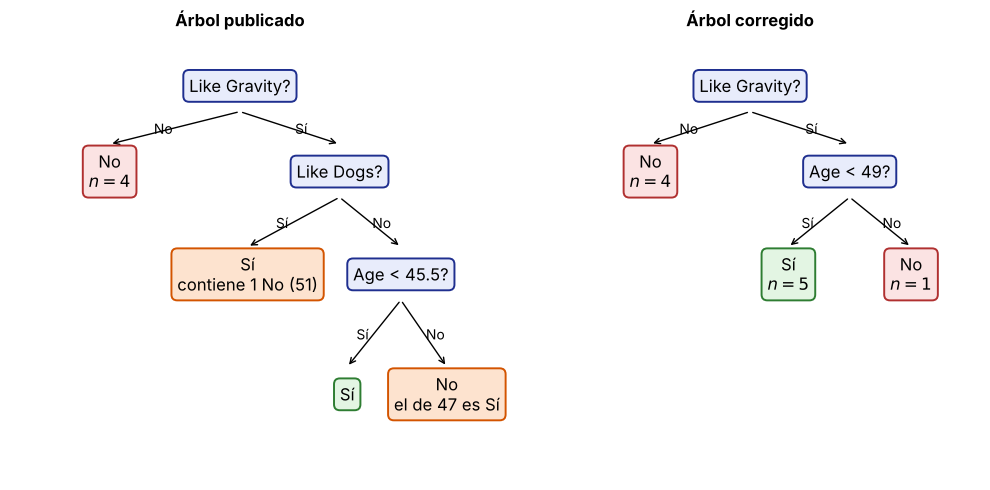

7. Árboles: dónde está el error del Ejercicio 6 (Sec. 12)#
Enunciado
Con los datos de la Tabla 5.1 de las notas (variable objetivo Gonna Be an Astronaut) se construye un árbol minimizando \(\text{Gini}_{\text{split}}=\frac{N_1}{N}\text{Gini}(\text{Nodo}_1)+\frac{N_2}{N}\text{Gini}(\text{Nodo}_2)\), con \(\text{Gini}=1-\sum_i(n_i/N)^2\). Localizar el error de la solución propuesta y corregirlo.
Age |
24 |
30 |
36 |
36 |
42 |
44 |
46 |
47 |
47 |
51 |
|---|---|---|---|---|---|---|---|---|---|---|
Like Dogs |
0 |
1 |
0 |
0 |
0 |
1 |
1 |
1 |
0 |
1 |
Like Gravity |
0 |
1 |
1 |
0 |
0 |
1 |
0 |
1 |
1 |
1 |
Astronauta |
0 |
1 |
1 |
0 |
0 |
1 |
0 |
1 |
1 |
0 |
Cómo se hizo la verificación
Todo se recalculó con fracciones exactas (ver la celda de código al final del capítulo). Los umbrales de
Age son puntos medios entre valores distintos consecutivos; “izquierda” es \(\text{Age}<a\). En las
tablas, \(n\) (Sí/No) indica el tamaño del grupo y cuántos son astronautas. No pudieron abrirse las
imágenes TREEDECISION1--6 de la página; de ellas solo se vieron los umbrales 27–39 del archivo.
El resto se contrastó con los números que da el texto de la solución.
7.1 Raíz (\(n=10\), 5 Sí / 5 No, \(\text{Gini}=0.5\))#
Partición |
Izq. \(n\) (Sí/No) |
Der. \(n\) (Sí/No) |
\(\text{Gini}_L\) |
\(\text{Gini}_R\) |
\(\text{Gini}_{\text{split}}\) |
valor |
|---|---|---|---|---|---|---|
Variable Age (umbral \(a\)) |
||||||
27 |
1 (0/1) |
9 (5/4) |
0.0000 |
0.4938 |
\(\frac49\) |
0.4444 |
33 |
2 (1/1) |
8 (4/4) |
0.5000 |
0.5000 |
\(\frac12\) |
0.5000 |
39 |
4 (2/2) |
6 (3/3) |
0.5000 |
0.5000 |
\(\frac12\) |
0.5000 |
43 |
5 (2/3) |
5 (3/2) |
0.4800 |
0.4800 |
\(\frac{12}{25}\) |
0.4800 |
45 |
6 (3/3) |
4 (2/2) |
0.5000 |
0.5000 |
\(\frac12\) |
0.5000 |
46.5 |
7 (3/4) |
3 (2/1) |
0.4898 |
0.4444 |
\(\frac{10}{21}\) |
0.4762 |
49 |
9 (5/4) |
1 (0/1) |
0.4938 |
0.0000 |
\(\frac49\) |
0.4444 |
Variables binarias (izq. = Sí (1), der. = No (0)) |
||||||
Like Dogs |
5 (3/2) |
5 (2/3) |
0.4800 |
0.4800 |
\(\frac{12}{25}\) |
0.4800 |
Like Gravity |
6 (5/1) |
4 (0/4) |
0.2778 |
0.0000 |
\(\mathbf{\frac16}\) |
0.1667 |
La mejor partición es Like Gravity (\(1/6\approx0.17\)), como dice la solución. El primer árbol
es correcto: con \(a=27\), \(\text{Gini}(D_1)=0\), \(\text{Gini}(D_2)=1-(5/9)^2-(4/9)^2=40/81\approx0.49\) y
\(\text{Gini}_{\text{split}}=\frac9{10}\cdot\frac{40}{81}=\frac49\approx0.44\); igual para 33 y 39 (\(=0.5\)). Solo hay una observación: la solución
lista también 36 y 47, que no son puntos medios entre valores distintos y dan las mismas particiones
que 33 y 46.5 (duplicados inofensivos). Además 27 y 49 empatan en \(4/9\).
7.2 Nodo Like Gravity = Sí (\(n=6\); 5 Sí / 1 No; \(\text{Gini}=5/18\))#
Datos: \((30,1),(36,0),(44,1),(47,1),(47,0)\) con etiqueta Sí y \((51,1)\) con etiqueta No (par = Age, Like Dogs).
Partición |
Izq. \(n\) (Sí/No) |
Der. \(n\) (Sí/No) |
\(\text{Gini}_L\) |
\(\text{Gini}_R\) |
\(\text{Gini}_{\text{split}}\) |
valor |
|---|---|---|---|---|---|---|
Variable Age |
||||||
33 |
1 (1/0) |
5 (4/1) |
0.0000 |
0.3200 |
\(\frac4{15}\) |
0.2667 |
40 |
2 (2/0) |
4 (3/1) |
0.0000 |
0.3750 |
\(\frac14\) |
0.2500 |
45.5 |
3 (3/0) |
3 (2/1) |
0.0000 |
0.4444 |
\(\frac29\) |
0.2222 |
49 |
5 (5/0) |
1 (0/1) |
0.0000 |
0.0000 |
\(\mathbf{0}\) |
0.0000 |
Like Dogs |
4 (3/1) |
2 (2/0) |
0.3750 |
0.0000 |
\(\frac14\) |
0.2500 |
Aquí está el error
Like Dogs: la solución reporta 0.17; el valor correcto es \(\frac14=0.25\). (El 0.17 es el Gini deLike Gravityen la raíz; parece haberse copiado.)Age: la solución dice que el mejor umbral es 45.5 (0.22, valor que sí es correcto). Pero el umbral 49 separa perfectamente (\(\{30,36,44,47,47\}\) son todos Sí y \(\{51\}\) es No): Gini \(=0\). Se omitió o se calculó mal.Por eso eligen
Like Dogs(\(0.17<0.22\)) cuando lo correcto es \(\text{Age}<49\) (\(0<0.22<0.25\)).
7.3 El árbol final de la solución también está mal#
Aun aceptando Like Dogs en ese nodo, el árbol publicado tiene dos fallas:
Rama
Like Dogs= Sí \(\{30,44,47\ (\text{Sí});\ 51\ (\text{No})\}\): se declara hoja “Sí”, pero es impura (\(\text{Gini}=3/8\)) y clasifica mal al de 51 años. Habría que seguir dividiendo (por \(\text{Age}<49\), Gini 0):Partición
Izq. \(n\) (Sí/No)
Der. \(n\) (Sí/No)
\(\text{Gini}_L\)
\(\text{Gini}_R\)
\(\text{Gini}_{\text{split}}\)
valor
37
1 (1/0)
3 (2/1)
0.0000
0.4444
\(\frac13\)
0.3333
45.5
2 (2/0)
2 (1/1)
0.0000
0.5000
\(\frac14\)
0.2500
49
3 (3/0)
1 (0/1)
0.0000
0.0000
\(\mathbf{0}\)
0.0000
Rama
Like Dogs= No \(\{(36,\text{Sí}),(47,\text{Sí})\}\): ya es pura y debía ser hoja “Sí”. La solución la divide con \(\text{Age}<45.5\) y asigna “No” a \(\text{Age}\ge45.5\), lo que contradice los datos (el de 47 años sí es astronauta). Parece que se intercambiaron las ramas.

Figura 4. Izquierda: árbol de la solución (hojas naranjas = asignaciones contradichas por los datos). Derecha: árbol corregido.
(Age, Dogs, Gravity) |
Real |
Publicado |
Corregido |
|---|---|---|---|
(24,0,0) |
No |
No |
No |
(30,1,1) |
Sí |
Sí |
Sí |
(36,0,1) |
Sí |
Sí |
Sí |
(36,0,0) |
No |
No |
No |
(42,0,0) |
No |
No |
No |
(44,1,1) |
Sí |
Sí |
Sí |
(46,1,0) |
No |
No |
No |
(47,1,1) |
Sí |
Sí |
Sí |
(47,0,1) |
Sí |
No |
Sí |
(51,1,1) |
No |
Sí |
No |
Exactitud en entrenamiento |
8/10 |
10/10 |
Conclusión
El error no está en el primer árbol (umbrales \(27,33,36,39,\dots\)). Está en el
nodo Like Gravity=Sí: Gini de Like Dogs \(=0.25\) (no 0.17), umbral \(\text{Age}=49\) con Gini 0
omitido, y ramas finales mal asignadas. El árbol correcto es: Like Gravity=No \(\Rightarrow\) No; Like Gravity=Sí \(\Rightarrow\) (\(\text{Age}<49\Rightarrow\) Sí, en otro caso No), con 100 % de exactitud en entrenamiento.
Recálculo con fracciones exactas#
== Raíz: n=10, Gini=1/2
Age < 27.0 izq 1 (0/1) der 9 (5/4) Gini_split = 4/9 = 0.4444
Age < 33.0 izq 2 (1/1) der 8 (4/4) Gini_split = 1/2 = 0.5000
Age < 39.0 izq 4 (2/2) der 6 (3/3) Gini_split = 1/2 = 0.5000
Age < 43.0 izq 5 (2/3) der 5 (3/2) Gini_split = 12/25 = 0.4800
Age < 45.0 izq 6 (3/3) der 4 (2/2) Gini_split = 1/2 = 0.5000
Age < 46.5 izq 7 (3/4) der 3 (2/1) Gini_split = 10/21 = 0.4762
Age < 49.0 izq 9 (5/4) der 1 (0/1) Gini_split = 4/9 = 0.4444
Like Dogs Gini_split = 12/25 = 0.4800
Like Gravity Gini_split = 1/6 = 0.1667
== Like Gravity = Sí: n=6, Gini=5/18
Age < 33.0 izq 1 (1/0) der 5 (4/1) Gini_split = 4/15 = 0.2667
Age < 40.0 izq 2 (2/0) der 4 (3/1) Gini_split = 1/4 = 0.2500
Age < 45.5 izq 3 (3/0) der 3 (2/1) Gini_split = 2/9 = 0.2222
Age < 49.0 izq 5 (5/0) der 1 (0/1) Gini_split = 0 = 0.0000
Like Dogs Gini_split = 1/4 = 0.2500
== Like Gravity = Sí, Like Dogs = Sí: n=4, Gini=3/8
Age < 37.0 izq 1 (1/0) der 3 (2/1) Gini_split = 1/3 = 0.3333
Age < 45.5 izq 2 (2/0) der 2 (1/1) Gini_split = 1/4 = 0.2500
Age < 49.0 izq 3 (3/0) der 1 (0/1) Gini_split = 0 = 0.0000